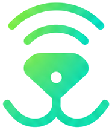

Ця система затверджена як єдине джерело правди — логотип, повні тональні рампи кольорів, чіткі ролі типографіки і видо-нейтральні іконки — взяті з пропозиції дизайнера. Усі 5 файлів екранів KnowSnout вже перефарбовані відповідно до цих токенів. включно з обов'язковою темною темою.
Знак — стилізований собачий ніс: трикутна морда з крапкою-переніссям, вусики-дужки знизу і два сигнальні "промені нюху" зверху, у зеленому градієнті. Текстовий логотип — «KnowSnout» темно-синім напівжирним поруч зі знаком.

Растрове зображення (з градієнтом) — кольорові варіанти нижче через фільтри поверх нього. Для друку в 1 колір чи вкрай малих розмірів — беріть чорний/білий варіант, не градієнтний.
Один стиль малювання (коло-«обличчя», прості вуха/плавники, 2.2px обводка зі скругленими кінцями) на будь-яку кількість видів — без кольорового кодування за видом.
Дворівневий вордмарк: «Know» у чорнильно-синьому, «Snout» — тим самим зеленим градієнтом, що й знак, так текст і мітка читаються як одна система. Знак вирівняний по оптичному центру, а не по геометричній висоті букв.
Глибокий смарагдово-тіловий як основний акцент (кнопки, активні стани), м'ятний як тло тегів/іконок, яскраво-зелений — тільки для логотипу/акцентних крапок. Текст — темно-синій вугільний, тло — теплий світло-сірий.
Manrope (напівжирний/екстражирний) для заголовків, Inter для тексту інтерфейсу.
Заокруглені прямокутники (не пігулки) — 14px для кнопок і карток, 999px лише для тегів/аватарів. Інпути — тонка м'ятна обводка, без заливки.
Невибраний стан: м'ятна обводка на білому. Вибраний: суцільна заливка primary teal, білий текст.
М'ятне коло-підложка, іконка-аутлайн у primary teal, товщина штриха ~2.2px.
Теплий чорно-коричневий фон, ті самі текстові картки трохи світліші, primary teal лишається акцентом (добре читається на темному).
Прямий, теплий, без зайвого пафосу. Приватні поля позначені прямо: «Лише для тебе, приватно», «Без публічного пошуку». Дисклеймери короткі й спокійні.